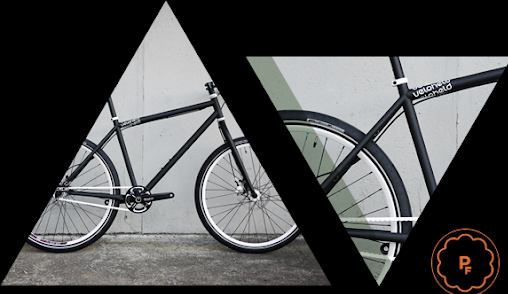

Fixed Gear Forever
16 APRIL 2011
The veloheld combines minimalist design with superb quality. Devoid of excessive graphics and gear shift components, the veloheld product range delights us with its beauty and simplicity ...